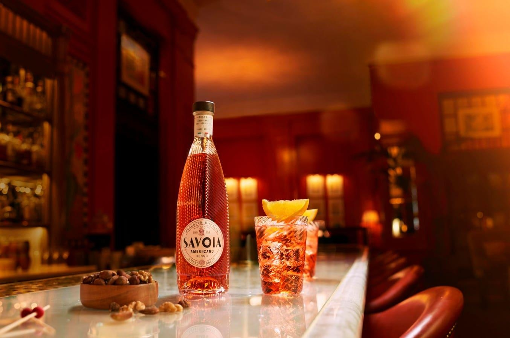

3 Easy Low-Proof Cocktail Recipes To Enjoy Beyond Dry And Damp JanuaryDry January has never been a thing in my household. To be clear: It’s not because we’re against anyone cutting back or foregoing alcohol altogether. It’s the smart thing to do, now that we know for certain that no amount of alcohol is safe for the human body to consume—a truth backed up by the approximately 140,000 alcohol-related deaths per year in the United States alone. And frankly, we should all be drinking more mindfully—preferably on the modest side of moderation. But there’s certainly a better (and smarter) way to go about it than suffering for a full thirty-one days—only to go off course the other eleven months of the year. It’s an ineffective strategy that doesn’t help anyone in the long run: Once deprived for a good chunk of time, it’s only human nature to revert back to old habits with a vengeance. Let’s break down the math: There are 52 weeks in a year and if you limit your drinking to three days a week (without overdoing it) you get 4,992 hours booze-free, which amounts to 208 days. That’s more than half a year, which in my mind is far superior to a month of dry existence, no? Naturally, regulating consumption is easier said than done—especially in cities like New York, London, Hong Kong, Paris, and Milan, where the robust drinking culture is part of the cities’ cultural fabric and nearly impossible to ignore. But there are signs of pro-sobriety progress and it’s refreshing to say the least: Sober bars are popping up all over America—from New York’s Hekate to Sans Bar in Austin to The Shirley Temple in Long Beach, and beyond. But what about at home? What about those no good, very bad days that call for a drink? In a world of Manhattans, Martinis, and Margaritas, what kind of easy low-proof alternatives can we count on at the end of an exhausting work day? Well, what I like to tell friends is to disregard the season and look toward summer cocktail recipes, many of which are low-proof and meant for easy drinking. (My go-tos are Rebujitos or Tiojitos, Pineau des Charentes and tonic, and Cognac-Ginger Ale.) And when I’m too busy even for those, I simply open an ice-cold can of Long Drink. If none of the above cocktails strike your fancy, below are three more good options—just make sure to limit your servings. Best Low-ABV Cocktails to Enjoy All Year Long WHITE PORT & TONIC (A.K.A PORTO TÓNICO) Though there’s no concrete evidence, it’s long been claimed that the White Port and Tonic cocktail was birthed in 2001—the year Porto was designated the European Capital of Culture, a distinction that changes every year. As the story goes, Taylor Fladgate—one of the leading Port houses in the region—developed the drink for the occasion, and it’s been widely popular ever since, with various iterations appearing in menus all over the city—and beyond. “The Porto Tónico is a drink for any occasion, because it encompasses two worlds: an aperitif (Port wine) but also the tonic that fits into a more social environment,” says Fábio Miranda, the manager Angel’s Share at WOW (World of Wine) in Porto. “I strongly recommend drinking Porto Tónico before a meal, as an aperitif, mainly because it’s dry and has the quinine of tonic water, which ends up whetting the appetite—making it the perfect starter for a meal. And it goes perfectly with cheese. As for garnishes, personally, I just like mint and a zest of lemon, but I think orange goes very well with it too. Citrus plus mint is the perfect combination.” Ingredients ⅓ parts Taylor’s Chip Dry White Port ⅔ parts tonic water 1 lime Mint, garnish Method: Pour the Taylor’s Chip Dry Port into a glass full of ice. Add the tonic water and stir. Garnish with mint leaves and lime zest. THE SAVOIA BELLINI Forget about all those unlimited Mimosas and Bloody Marys at brunch. A good number of restaurants rarely use top shelf liquor and mixers in the first place, leaving you stuck with something marginally undrinkable. (Sorry: Mass-produced juices combined with sub-par liquor simply do not make for good drinks.) So you’re better off holding back with a lower-proof drink that satisfies your craving for a well-made libation—all while keeping you sober-ish and collected. “The idea behind the cocktail is to celebrate the brunch moment,” says Federico Doldi, the food and beverage director at the Meatpacking District’s Gansevoort Hotel. “What better way to celebrate than with a twist on a classic Bellini, educating consumers about ‘veganuary’ and conscious drinking.” Ingredients 1 oz. Savoia 3 oz. peach purée Prosecco Orange wheel, garnish Method: Combine ingredients in a tall glass over fresh ice. Garnish with an orange wheel and serve. PARTLY SUNNY A Mimosa, when done right using freshly squeezed orange juice and top-notch Champagne, is a fresh little slice of summer in heaven. Done wrong—with cut-rate ingredients and zero moderation—and you’re in for one helluva headache. Thankfully, there are a number of recipe variations that can keep the much-beloved cocktail low-proof and just as tasty. “Our take on a mimosa, the Partly Sunny is a light and delicious way to enjoy a flavorful cocktail that’s not too boozy,” says Sunshine Punch cofounder Matt Hemmings. “The sparkling water is a perfect bubbly complement to Sunshine Punch’s creamy citrus notes. This recipe can go from brunch to backyard barbeque to waterside sipping with ease.” Ingredients 1 part Sunshine Punch 1 part sparkling water Mint, garnish Orange twist, garnish Method: Combine Sunshine Punch and your favorite sparkling water in an ice-filled Collins glass. Garnish with mint and an orange twist. MORE ON FORBES Follow me on Instagram (@kalindahao) and Twitter (@karlaalindahao) |
 |